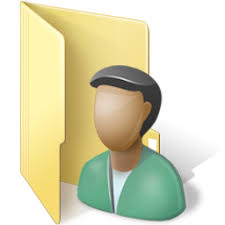
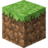

Meu Perfil

Projetos

Contato

Minecraft
Meu Perfil
Projetos
Contato
Minecraft
saudação
Olá, meu nome é Kauã Lopes. Tenho 18 anos e não tenho muitos passatempos, mas o meu principal é jogar. Possivelmente tenho TDAH; não é à toa que demorei 20 minutos para escrever apenas esta frase. Gosto de gatos e da estetica frutiger aero, jogo Genshin Impact e Clash Royale. ATENÇÃO: Se você apertar o botão de música, ela NÃO vai parar mais. Obrigado e adeus. (P.S.: O botão "Iniciar" faz barulho, mas é segredo.).